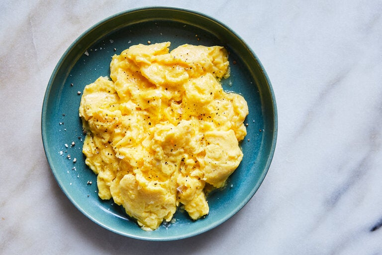

Steak Tacos

Dish Description
Who doesn't like a delicious plate of scrambled eggs for breakfats? This recipe will teach you
how to prepare them perfectly every time. The ingredients are simple and you very likely have them at home
already. Follow this recipe and you will be able to enjoy prefectly fluffy scrambled eggs in a matter
of minutes.
Ingredients
- 3 large eggs
- Cooking oil
- Salt and pepper
Preparation
- Crack your three eggs in a large bowl.
- With a whisk, scramle your eggs vigorously for roughly 2 minutes (if you dont have a whisk, you can use a fork).
- Heat up a frying pan with enough coocking oil to coat the bottom.
- Once the oil is hot, turn the heat down to medium.
- Pour your eggs into the pan and stir them.
- Take the eggs off the heat and keep stirring.
- Place eggs back on the heat and add salt and pepper to taste.
- Once the eggs are about 80% ready, serve them on a plate.